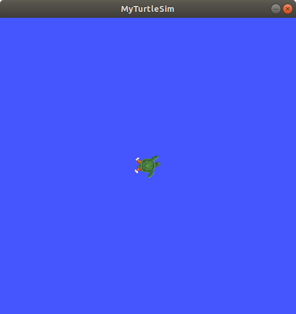

创建一个工作区¶
工作区（workspace）是一个包含 ROS 2 包的目录。在使用 ROS 2 之前，有必要在您计划工作的终端中创建您的 ROS 2 安装工作区。这使得您可以在该终端上使用 ROS 2 的包。
你也可以选择激活一个覆盖层-一个二级工作区，在那里你可以添加新的包，而不干扰你正在扩展的现有 ROS 2 工作区，或“底层”（underlay）。你的底层必须包含覆盖层中所有包的依赖项。覆盖层中的包将覆盖底层中的包。也可以有多层的底层和覆盖层，每个后续的覆盖层都使用其父层的包。
先决条件¶
了解基本的终端命令（以下是 Linux 的指南）
您选择的文本编辑器
激活 ROS 2 环境¶
您的主要 ROS 2 安装将是本教程的基础。（请记住，底层不一定是主要的 ROS 2 安装。）
取决于你如何安装 ROS 2（从源代码或二进制文件），以及你所在的平台，你的源代码命令会有所不同：
source /opt/ros/galactic/setup.bash
. ~/ros2_install/ros2-osx/setup.bash
记住使用 x64 Native Tools Command Prompt for VS 2019 命令提示符来执行以下命令，因为我们将构建一个工作区。
call C:\dev\ros2\local_setup.bat
如果这些命令对您不起作用，请参考您所遵循的安装指南。
新建目录¶
最佳实践是为每个新工作区创建一个新目录。名称并不重要，但让它表明工作区的用途是有帮助的。让我们为“开发工作区”选择一个名为 dev_ws 的目录：
mkdir -p ~/dev_ws/src
cd ~/dev_ws/src
mkdir -p ~/dev_ws/src
cd ~/dev_ws/src
md \dev_ws\src
cd \dev_ws\src
另一个最佳实践是将工作区中的任何包放到 src 目录中。上面的代码在 dev_ws 中创建了一个 src 目录，然后导航到它。
克隆一个样本 repo¶
在克隆之前，确保您仍然在 dev_ws/ 目录中。
在其余的初级开发人员教程中，您将创建自己的包，但现在您将练习使用现有的包将工作区放在一起。
您将使用的现有包来自 ros_tutorials 存储库（repo）。如果你读过“初学者:CLI工具”教程，你会熟悉 turtlesim，这是这个 repo 中的一个包。
你可以在 GitHub 上 看到该仓库。
注意，在目录列表的左边有一个“Branch”下拉列表。当你克隆这个 repo 时，添加 -b 参数，后面跟着对应于你的 ROS 2 发行版的分支。
在 dev_ws 目录下，针对你正在使用的发行版运行以下命令：
git clone https://github.com.cnpmjs.org/ros/ros_tutorials.git src/ros_tutorials -b galactic-devel
现在 ros_tutorials 被克隆到您的工作区中。如果您现在查看 dev_ws/src 的内容，您将看到新的 ros_tutorials 目录。
要查看 ros_tutorials 里面的包，输入命令：
ls src/ros_tutorials
dir src/ros_tutorials
它会列出你刚克隆的 repo 的内容，像这样：
roscpp_tutorials rospy_tutorials ros_tutorials turtlesim
前三个包被忽略了；turtlesim 是这个仓库中唯一实际的 ROS 2 包。
现在您已经用示例包填充了工作区，但它还不是一个功能齐全的工作区。您需要首先解决依赖关系并构建工作区。
解决依赖关系¶
在构建工作区之前，您需要解析包依赖关系。您可能已经有了所有的依赖项，但最佳实践是每次克隆时检查依赖项。您不希望构建在长时间等待后因为缺少依赖项而失败。
从你的工作区的根（dev_ws），运行以下命令：
rosdep install -i --from-path src --rosdistro galactic -y
rosdep 只能在 Linux 上运行，所以你可以跳到“用 colcon 构建工作区”小节。
如果您从源代码或“fat”归档文件在 Linux上 安装了 ROS 2，那么您需要从它们的安装说明中使用 rosdep 命令。这里是来自源的 rosdep 部分和“胖”存档的 rosdep 部分。
如果你已经有了所有的依赖项，控制台将返回：
#All required rosdeps installed successfully
包在 package.xml 文件中声明它们的依赖项（在下一个教程中您将了解更多关于包的信息）。该命令遍历这些声明，并安装缺失的声明。你可以在另一个教程(即将推出)中了解更多关于 rosdep 的内容。
使用 colcon 构建工作区¶
从你的工作区的根（dev_ws），你现在可以使用命令构建你的包：
colcon build
colcon build --merge-install
Windows 不允许长路径，所以 merge-install 将把所有路径合并到安装目录中。
控制台将返回以下消息：
Starting >>> turtlesim
Finished <<< turtlesim [5.49s]
Summary: 1 package finished [5.58s]
注解
colcon build 的其他有用参数：
--packages-up-to构建您想要的包，以及它的所有依赖项，但不是整个工作区（节省时间）--symlink-install节省您在每次调整 Python 脚本时都必须重新构建的时间--event-handlers console_direct+显示构建时的控制台输出（可以在log目录中找到）
一旦构建完成，在工作区根目录（~/dev_ws）中输入 ls，你会看到 colcon 已经创建了新的目录：
build install log src
install 目录是工作区的 setup 文件所在的位置，您可以使用这些文件来生成覆盖层。
激活覆盖层¶
在获取覆盖层之前，打开一个新的终端是非常重要的，它与您构建工作区的那个终端是分开的。在您所构建的终端中寻找覆盖层，或者在覆盖层来源的终端中寻找覆盖层，可能会产生复杂的问题。
在新的终端中，source 你的主要 ROS 2 环境作为“底层”，所以你可以在它之上构建覆盖层：
source /opt/ros/galactic/setup.bash
. ~/ros2_install/ros2-osx/setup.bash
在这种情况下，您可以使用一个普通的命令提示符，因为我们不打算在这个终端中构建任何工作区。
call C:\dev\ros2\local_setup.bat
进入工作区的根目录：
cd ~/dev_ws
在根目录中，获取 overlay 的源代码：
. install/local_setup.bash
call install/setup.bat
注解
获取覆盖层的 local_setup 只会将覆盖层中可用的包添加到您的环境中。setup 源覆盖以及创建它的底层，允许您利用这两个工作区。
所以，激活你的主要 ROS 2 安装的 setup，然后 dev_ws 覆盖的 local_setup，就像你刚刚做的，是相同的只是来源 dev_ws 的 setup，因为这包括它创建的底层环境。
现在你可以从覆盖层运行 turtlesim 包：
ros2 run turtlesim turtlesim_node
但是你怎么知道这是运行的覆盖 turtlesim，而不是你的主安装的 turtlesim？
让我们在覆盖层中修改 turtlesim，这样你就可以看到效果：
您可以在覆盖层中单独修改和重建包。
覆盖层优先于底层。
修改覆盖层¶
你可以通过编辑 turtlesim 窗口的标题栏在覆盖层中修改 turtlesim。为此，在 ~/dev_ws/src/ros_tutorials/turtlesim/src 中找到 turtle_frame.cpp 文件。使用首选的文本编辑器打开 turtle_frame.cpp。
在第 52 行，您将看到函数 setWindowTitle("TurtleSim");。将 "TurtleSim" 的值修改为"MyTurtleSim"，保存文件。
返回之前运行 colcon build 的第一个终端并再次运行它。
返回到第二个终端（覆盖的激活），再次运行 turtlesim：
ros2 run turtlesim turtlesim_node
你会看到 turtlesim 窗口的标题栏现在显示“MyTurtleSim”。

即使您的主 ROS 2 环境是在这个终端中早先获得的，您的 dev_ws 环境的覆盖层优先于底层的内容。
要看到你的底层仍然完好无损，打开一个全新的终端和来源只您的 ROS 2 安装。再次运行 turtlesim：
ros2 run turtlesim turtlesim_node

你可以看到在覆盖层中的修改实际上并没有影响到底层中的任何东西。
小结¶
在本教程中，你将你的主要 ROS 2 发行版安装作为你的底层，并通过在一个新的工作区中克隆和构建包创建一个覆盖层。覆盖层被附加到路径上，并优先于底层，正如您在修改后的 turtlesim 中看到的那样。
对于处理少量的包，建议使用覆盖层，因此您不必将所有内容都放在同一个工作区中，并在每次迭代时重新构建一个巨大的工作区。